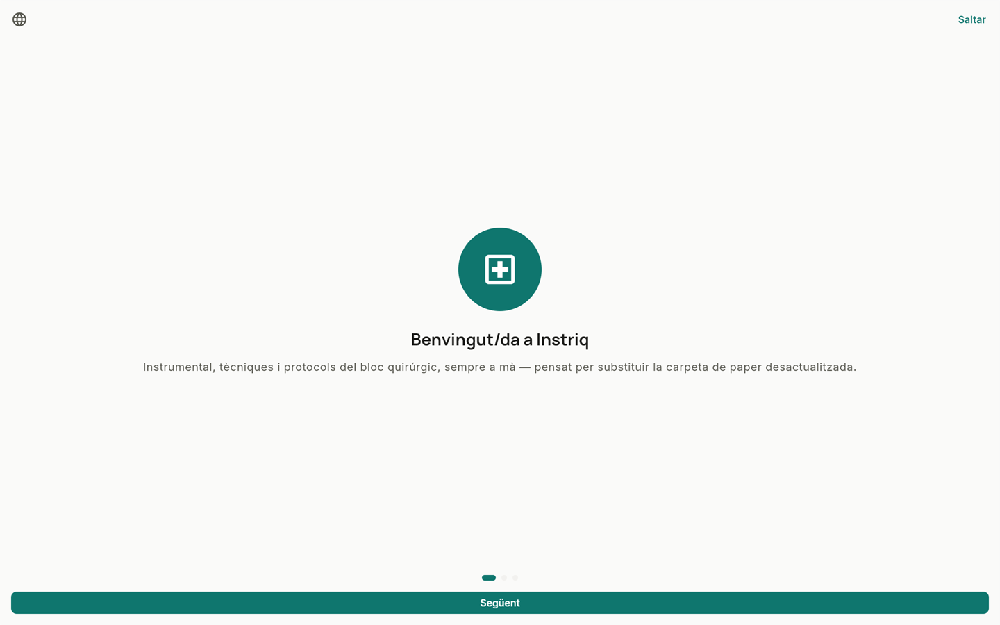

Instriq
InstriqLa benvinguda de primer ús
La primera vegada que s'obre l'app, una breu presentació en 3 passos explica què és Instriq abans d'entrar-hi.
1
Es pot avançar pas a pas o tocar «Saltar» per anar directament a l'app.

2
Només es mostra una vegada per dispositiu; no torna a aparèixer en els usos següents.